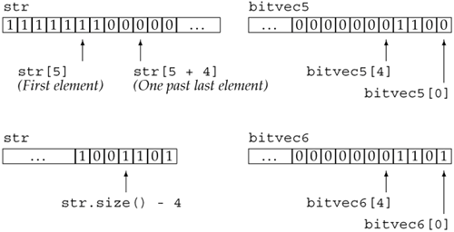

3.5. Library bitset TypeSome programs deal with ordered collections of bits. Each bit can contain either a 0 (off) or a 1 (on) value. Using bits is a compact way to keep yes/no information (sometimes called flags) about a set of items or conditions. The standard library makes it easy to deal with bits through the bitset class. To use a bitset we must include its associated header file. In our examples, we also assume an appropriate using declaration for std::bitset is made:
#include <bitset>
using std::bitset;
3.5.1. Defining and Initializing bitsetsTable 3.6 lists the constructors for bitset. Like vector, the bitset class is a class template. Unlike vector, objects of type bitset differ by size rather than by type. When we define a bitset, we say how many bits the bitset will contain, which we do by specifying the size between a pair of angle brackets.
bitset<32> bitvec; // 32 bits, all zero
The size must be a constant expression (Section 2.7, p. 62). It might be defined, as we did here, using an integral literal constant or using a const object of integral type that is initialized from a constant. This statement defines bitvec as a bitset that holds 32 bits. Just as with the elements of a vector, the bits in a bitset are not named. Instead, we refer to them positionally. The bits are numbered starting at 0. Thus, bitvec has bits numbered 0 through 31. The bits starting at 0 are referred to as the low-order bits, and those ending at 31 are referred to as high-order bits. Initializing a bitset from an unsigned ValueWhen we use an unsigned long value as an initializer for a bitset, that value is treated as a bit pattern. The bits in the bitset are a copy of that pattern. If the size of the bitset is greater than the number of bits in an unsigned long, then the remaining high-order bits are set to zero. If the size of the bitset is less than that number of bits, then only the low-order bits from the unsigned value are used; the high-order bits beyond the size of the bitset object are discarded. On a machine with 32-bit unsigned longs, the hexadecimal value 0xffff is represented in bits as a sequence of 16 ones followed by 16 zeroes. (Each 0xf digit is represented as 1111.) We can initialize a bitset from 0xffff:
// bitvec1 is smaller than the initializer
bitset<16> bitvec1(0xffff); // bits 0 ... 15 are set to 1
// bitvec2 same size as initializer
bitset<32> bitvec2(0xffff); // bits 0 ... 15 are set to 1; 16 ... 31 are 0
// on a 32-bit machine, bits 0 to 31 initialized from 0xffff
bitset<128> bitvec3(0xffff); // bits 32 through 127 initialized to zero
In all three cases, the bits 0 to 15 are set to one. For bitvec1, the high-order bits in the initializer are discarded; bitvec1 has fewer bits than an unsigned long. bitvec2 is the same size as an unsigned long, so all the bits are used to initialize that object. bitvec3 is larger than an unsigned long, so its high-order bits above 31 are initialized to zero. Initializing a bitset from a stringWhen we initialize a bitset from a string, the string represents the bit pattern directly. The bits are read from the string from right to left:
string strval("1100");
bitset<32> bitvec4(strval);
The bit pattern in bitvec4 has bit positions 2 and 3 set to 1, while the remaining bit positions are 0. If the string contains fewer characters than the size of the bitset, the high-order bits are set to zero.
We need not use the entire string as the initial value for the bitset. Instead, we can use a substring as the initializer:
string str("1111111000000011001101");
bitset<32> bitvec5(str, 5, 4); // 4 bits starting at str[5], 1100
bitset<32> bitvec6(str, str.size() - 4); // use last 4 characters
Here bitvec5 is initialized by a substring of str starting at str[5] and continuing for four positions. As usual, we start at the rightmost end of this substring when initializing the bitset, meaning that bitvec5 is initialized with bit positions 0 through 3 set to 1100 while its remaining bit positions are set to 0. Leaving off the third parameter says to use characters from the starting position to the end of the string. In this case, the characters starting four from the end of str are used to initialize the lower four bits of bitvec6. The remainder of the bits in bitvec6 are initialized to zero. We can view these initializations as  3.5.2. Operations on bitsetsThe bitset operations (Table 3.7) define various operations to test or set one or more bits in the bitset.
Testing the Entire bitsetThe any operation returns true if one or more bits of the bitset object are turned onthat is, are equal to 1. Conversely, the operation none returns true if all the bits of the object are set to zero.
bitset<32> bitvec; // 32 bits, all zero
bool is_set = bitvec.any(); // false, all bits are zero
bool is_not_set = bitvec.none(); // true, all bits are zero
If we need to know how many bits are set, we can use the count operation, which returns the number of bits that are set:
size_t bits_set = bitvec.count(); // returns number of bits that are on
The return type of the count operation is a library type named size_t. The size_t type is defined in the cstddef header, which is the C++ version of the stddef.h header from the C library. It is a machine-specific unsigned type that is guaranteed to be large enough to hold the size of an object in memory. The size operation, like the one in vector and string, returns the total number of bits in the bitset. The value returned has type size_t:
size_t sz = bitvec.size(); // returns 32
Accessing the Bits in a bitsetThe subscript operator lets us read or write the bit at the indexed position. As such, we can use it to test the value of a given bit or to set that value:
// assign 1 to even numbered bits
for (int index = 0; index != 32; index += 2)
bitvec[index] = 1;
This loop turns on the even-numbered bits of bitvec. As with the subscript operator, we can use the set, test, and reset operations to test or set a given bit value:
// equivalent loop using set operation
for (int index = 0; index != 32; index += 2)
bitvec.set(index);
To test whether a bit is on, we can use the test operation or test the value returned from the subscript operator:
if (bitvec.test(i))
// bitvec[i] is on
// equivalent test using subscript
if (bitvec[i])
// bitvec[i] is on
The result of testing the value returned from a subscript is true if the bit is 1 or false if the bit is 0. Setting the Entire bitsetThe set and reset operations can also be used to turn on or turn off the entire bitset object, respectively:
bitvec.reset(); // set all the bits to 0.
bitvec.set(); // set all the bits to 1
The flip operation reverses the value of an individual bit or the entire bitset:
bitvec.flip(0); // reverses value of first bit
bitvec[0].flip(); // also reverses the first bit
bitvec.flip(); // reverses value of all bits
Retrieving the Value of a bitsetThe to_ulong operation returns an unsigned long that holds the same bit pattern as the bitset object. We can use this operation only if the size of the bitset is less than or equal to the size of an unsigned long:
unsigned long ulong = bitvec3.to_ulong();
cout << "ulong = " << ulong << endl;
The to_ulong operation is intended to be used when we need to pass a bitset to a C or pre-Standard C++ program. If the bitset contains more bits than the size of an unsigned long, a run-time exception is signaled. We'll introduce exceptions in Section 6.13 (p. 215) and look at them in more detail in Section 17.1 (p. 688). Printing the BitsWe can use the output operator to print the bit pattern in a bitset object:
bitset<32> bitvec2(0xffff); // bits 0 ... 15 are set to 1; 16 ... 31 are 0
cout << "bitvec2: " << bitvec2 << endl;
will print
bitvec2: 00000000000000001111111111111111
Using the Bitwise OperatorsThe bitset class also supports the built-in bitwise operators. As defined by the language, these operators apply to integral operands. They perform operations similar to the bitset operations described in this section. Section 5.3 (p. 154) describes these operators. |